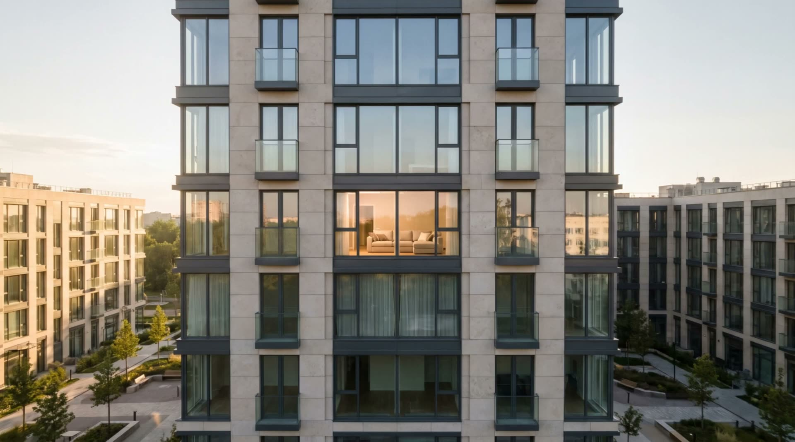

ЛИНИЯ.ЖИЛОЙ КВАРТАЛ У ПАРКА
ЖК ЛИНИЯ · КВАРТАЛ У ПАРКА
ДОМ, ГДЕ
СОЛНЦЕ
ДО ВЕЧЕРА.
9 ЭТАЖ · ОКНА НА ЗАПАД
ЗАГЛЯНИТЕ
В ОКНО.
ПОВОРОТ НАПРАВО · КУХНЯ
СЕРДЦЕ
ДОМА —
НАПРАВО.
ВНИЗ · ДВОР КВАРТАЛА
ДВОР
БЕЗ МАШИН.
ДО ОКНА240М
ДО ВСТРЕЧИ043М
ЛИСТАЙТЕ ↓
ПРОБА · ЖК И ЦИФРЫ ВЫДУМАНЫ
ЗАГРУЗКА 0%
КУХНЯ 0%
ДВОР 0%
АРКА 0%